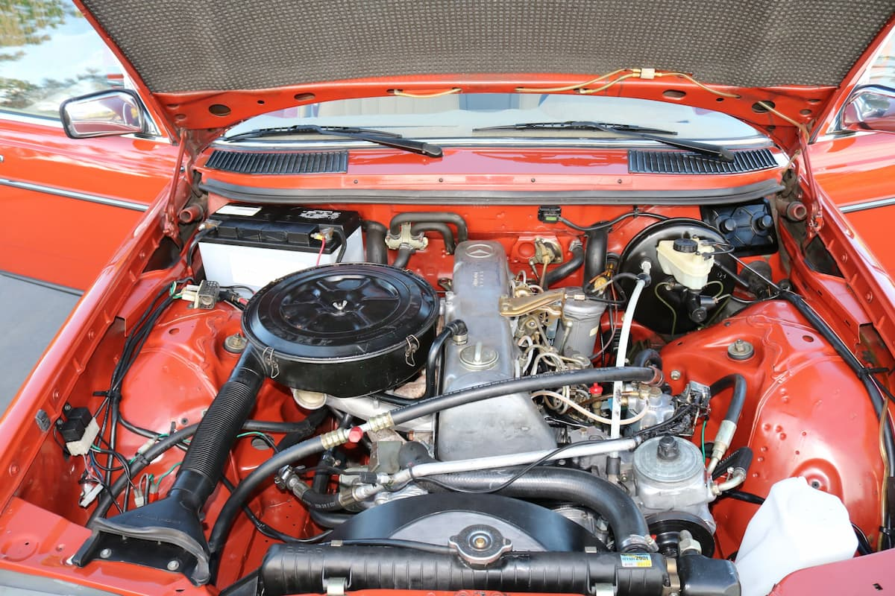
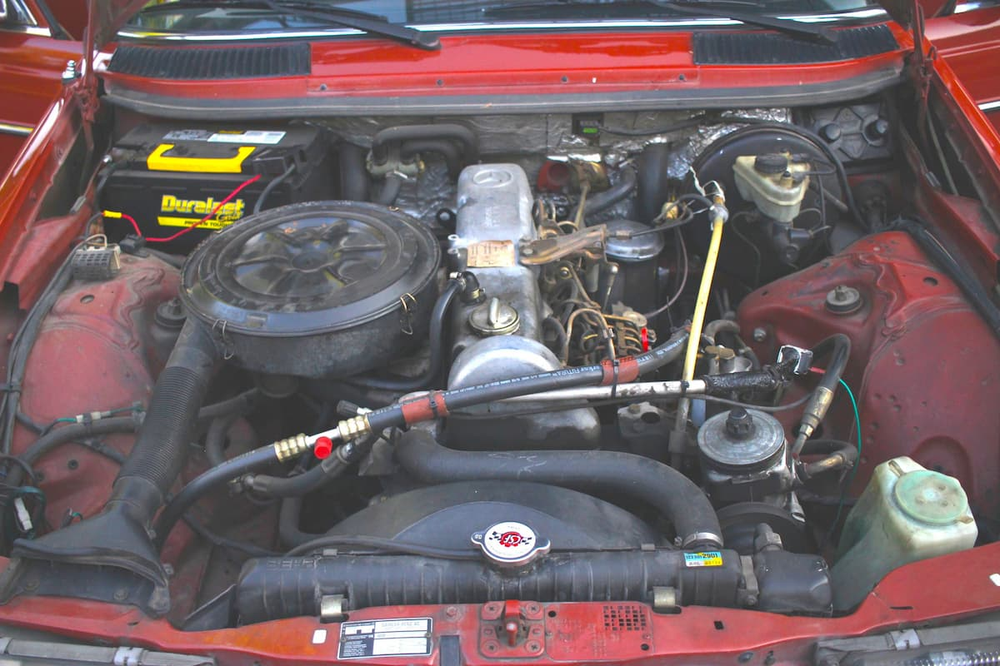

01Pulling the engine
Some of the gaskets can only be replaced with the engine out, so out it came.

Before touching the engine, I cleaned 30+ years of caked-on oil out of the engine bay and installed a new hood insulation pad.


02Teardown & cleanup
With a clean home for the engine to return to, I mounted the engine on a stand, did a first round of degreasing, removed the extraneous parts, and labeled every single nut, bolt and screw.


Every removed part was cleaned thoroughly. I also pulled the transmission after learning the engine is easier to reinstall with the transmission attached. Here are all the parts to be reused, cleaned up as well as possible:


The engine, all cleaned up:


I wanted the engine to look as good as it ran, so I painted it with black engine enamel — the original paint had worn away over the years.

03The bottom end
Next: replace the rear crankshaft seal and inspect the rod and main bearings for wear. First I removed the oil pump and the camshaft sprocket.


Removing the main and connecting-rod bearing caps:

With the caps off, the crankshaft could come out.


I labeled every bearing cap by its exact original position, per the factory engine manual. The main and rod bearings were significantly worn — expected at 230k miles. The Mercedes dealership in Sacramento tracked down original bearings in Germany and had them shipped over.

Old versus new bearings (old on the right):


04Reassembly
With the crankshaft back from the machine shop, I reassembled the bottom end using a properly calibrated torque wrench and the factory torque specs from the Mercedes dealership service manual.


I reinstalled the fuel-injection pump and set the timing approximately.

Then every component I’d removed went back on, and I adjusted the valve clearance on each cylinder.


Finally I replaced the clutch and pressure plate and bolted the transmission to the back of the engine, ready to go back in the car.


05Back on the road
With the engine back in the car, I reconnected every electrical and mechanical connection, then fired it up to dial in the timing. After some adjusting, the engine ran beautifully.
·Before & after
Drag the handle to compare.


·Parts replaced 22
- Valve cover gasket
- Oil cap gasket
- Oil filter
- Glow plugs
- Vacuum pump gasket
- Oil filter housing gasket
- Upper oil pan gasket
- Lower oil pan gasket
- Oil cooler lines (rebuilt)
- Timing chain tensioner
- Main & rod bearings
- Crankshaft thrust washers
- Front & rear crank seals
- Water pump & gasket
- Thermostat
- Crankshaft pulley
- Engine mounts
- Clutch disc & pressure plate
- Clutch slave cylinder
- Power steering pump (rebuilt)
- Power steering filter
- Air filter
✓The result
Put back together, the engine is 100% leak-free and running as good as new. This mechanical refurbishment gives the car many more years on the road.